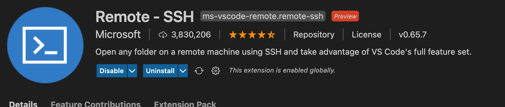
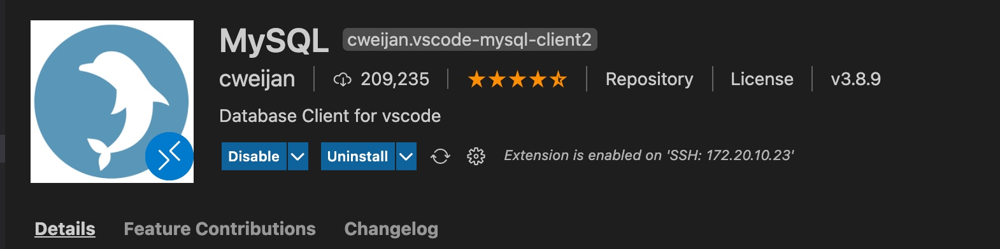
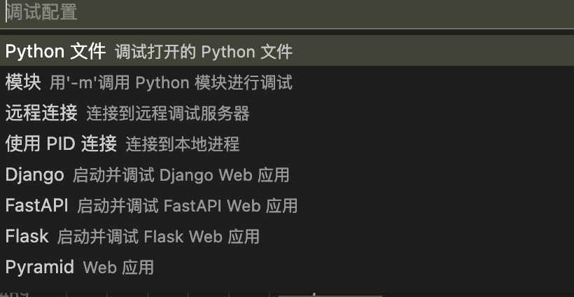

所属 Topic：数据科学工作流 · 类型：工具
1. iterm终端配置-oh my zsh#
rzsz
https://github.com/snow-sprite/rzsz
安装#
oh my zsh 是一款强大的虚拟终端，兼容bash，提供了各种主题配置、插件。
官网：https://ohmyz.sh/
# 安装
git clone git://github.com/robbyrussell/oh-my-zsh.git ~/.oh-my-zsh
#备份旧.zshrc配置
cp ~/.zshrc ~/.zshrc.orig
cp ~/.oh-my-zsh/templates/zshrc.zsh-template ~/.zshrc
#修改默认shell
chsh -s /bin/zsh
卸载 uninstall_oh_my_zsh
注意：如果安装oh my zsh后conda命令无法使用，这个时候需要修改一下.zshrc文件，添加一句
export PATH=/home/username/anaconda/bin:$PATH
主题#
https://github.com/robbyrussell/oh-my-zsh/wiki/Themes
oh my zsh 有各种丰富的主题可供选择，可以在其github上找到对应的主题样式。其对应的配置文件在vim ~/.zshrc中，只需修改其中的ZSH_THEME="robbyrussell" 即可。
2.IDE-sublime,vscode#
1.sublime#
sublime除了具有基本的文本编辑功能之外，还可以安装很多package来扩展其强大的功能。这里罗列出一些工作中经常能用到的
安装install package
点击菜单中的 “View”–“Show Console”，调出console面板，然后到https://packagecontrol.io/installation#st3
官网上的，复制出代码黏贴执行。执行完毕即可。
格式化json#
打开 Sublime，command + shift + p -> Install package
搜索 Pretty JSON，安装
之后mac上用： command + ctrl + j 即可直接格式化显示。
比较diff#
git#
latex#
安装latex
(1) 进入 http://www.tug.org/mactex/ 下载安装MacTeX.pkg
(2) Sublime按下“Command+Shift+P”打开命令托盘Command pallet，这一步也可以通过Tools下拉菜单完成。
在命令托盘里输入“Install Package”，按下Enter回车建。
完成之后，输入“LaTeX Tools”，找到这一项并回车安装。
退出并重启Sublime Text。
2.vs code#
常用插件
remote ssh
连接服务器

mysql

debug:
默认支持很多的debug，比如

也可以自己添加配置，支持args传入相关的参数
{
"version": "0.2.0",
"configurations": [
{
"name": "Logstat: Current File",
"type": "python",
"request": "launch",
"program": "/home/zzzheng/recommandation/logstat_ml/run.py",
"console": "integratedTerminal",
"args": [
"-e", "ana.yaml", "-m", "timeseries_ana"
]
}
]
}
实际执行的命令:
cd /home/zzzheng/recommandation/exps/analysis_TA ; /usr/bin/env /home/zzzheng/miniconda3/bin/python /home/zzzheng/.vscode-server/extensions/ms-python.python-2021.6.944021595/pythonFiles/lib/python/debugpy/launcher 31735 -- /home/zzzheng/recommandation/logstat_ml/run.py -e ana.yaml -m timeseries_ana